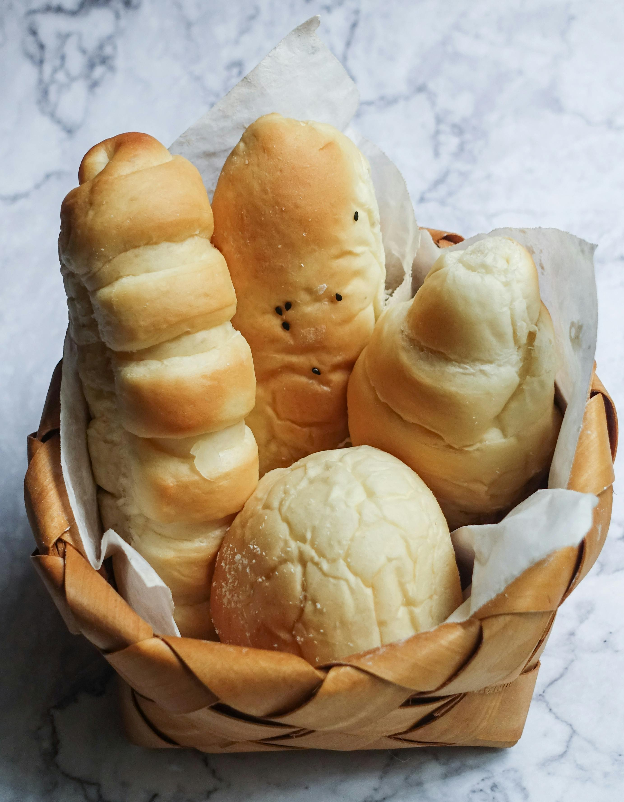

Bread is a staple food prepared from a dough of flour (usually wheat) and water, usually by baking. Throughout recorded history and around the world, it has been an important part of many cultures' diet. It is one of the oldest human-made foods, having been of significance since the dawn of agriculture, and plays an essential role in both religious rituals and secular culture.
Bread may be leavened by naturally occurring microbes (e.g. sourdough), chemicals (e.g. baking soda), industrially produced yeast, or high-pressure aeration, which creates the gas bubbles that fluff up bread. In many countries, commercial bread often contains additives to improve flavor, texture, color, shelf life, nutrition, and ease of production.
To register for bread tasting fill out this form:
bread tasting form